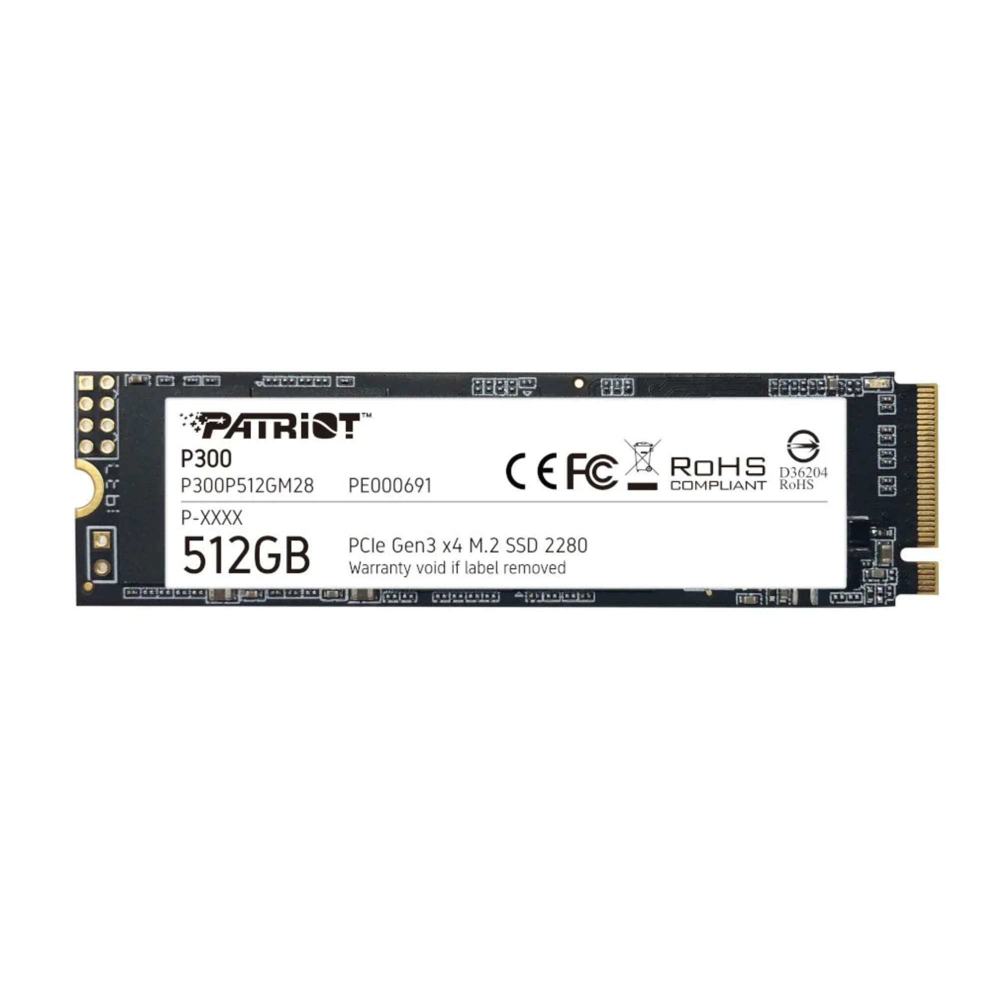

O SSD PATRIOT P300 512GB M.2 2280 NVMe PCIe x4 Gen3 (L=1700MB/s / E=1100MB/s) é um SSD, bem mais rápido que um HD para o sistema, os programas e os jogos. 512 GB, Formato M.2 2280, NVMe, Leitura até 1700 MB/s, Gravação até 1100 MB/s. Confira o formato (M.2 ou SATA) e a compatibilidade com a sua placa-mãe.
Você fala direto com nosso time pelo WhatsApp, do começo ao fim — para tirar dúvida, fechar o pedido e acompanhar a entrega. Entrega em 24 horas ou até 7 dias úteis, conforme a seção do produto.
Todos os produtos são novos, lacrados e originais, vindos de fornecedores autorizados. Você tem 7 dias para troca ou devolução após o recebimento, conforme o Código de Defesa do Consumidor.
Temos técnicos em informática: montagem, configuração, otimização de desempenho, backup de dados e cabeamento estruturado — para computadores de uso pessoal, gamer e de escritório.